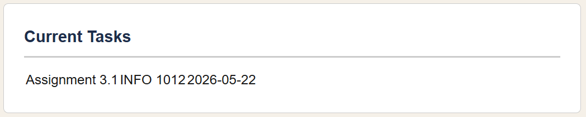
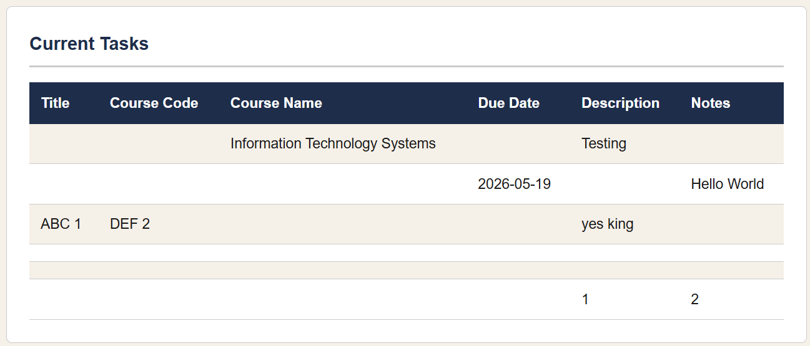
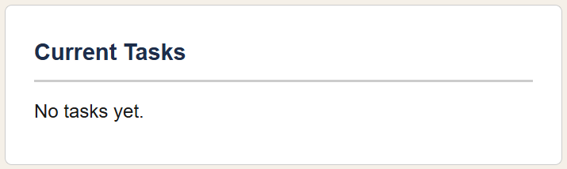
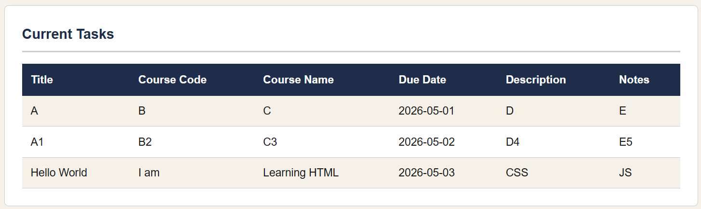
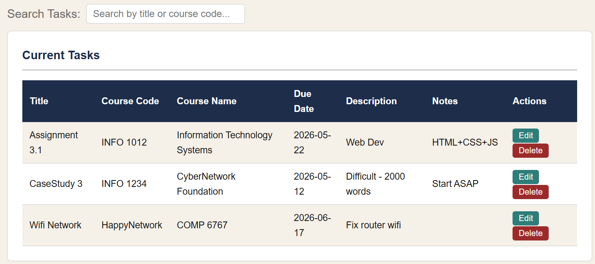
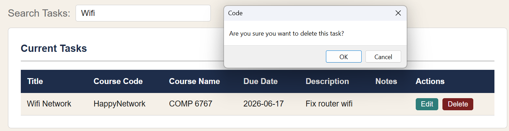
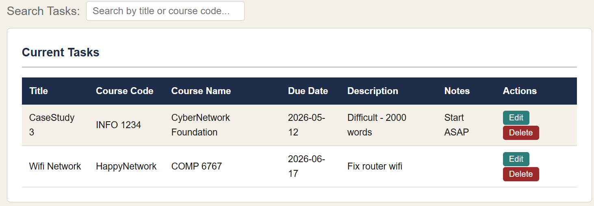
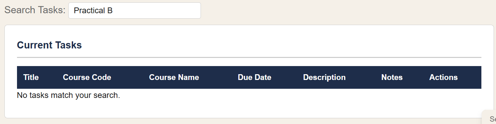

This project follows a simple 3-week sprint plan based on Agile ideas.
The work is broken into smaller parts and completed step by step over time.
Week
Phase
Planned Work
Week 1
Planning and Analysis
Read the assignment, create the repository structure, and plan the pages and features.
Week 2
Design and Implementation
Build the home page and task management page using HTML, CSS, and JavaScript.
Week 3
Testing and Maintenance
Test features, fix errors, improve the pages, and complete the blog and ethics reflection.
Troubleshooting Blog
This section records errors found during development, what caused them,
and how they were fixed.
Error 1 — Task List Not Rendering the Full List
Date and Time Encountered: 3 May 2026, 12:17 PM
Screenshot of Error

Figure 1.1. Screenshot showing only the latest task appearing in the list.
Code That Caused the Issue
// Inside the form submit handler — a new table was created
// and only the newest task was appended to it each time
taskListSection.innerHTML = "<h2>Current Tasks</h2>";
const table = document.createElement("table");
const row = document.createElement("tr");
row.innerHTML = "<td>" + newTask.title + "</td><td>" + newTask.code + "</td><td>" + newTask.due + "</td>";
table.appendChild(row);
taskListSection.appendChild(table);
Troubleshooting Explanation
Possible cause: The rendering logic was placed directly inside the form submit handler. Every submission cleared the container and built a brand new table with only the newest task, so all previously added tasks disappeared.
How it was resolved: A separate renderTasks() function was created. It clears the container first, then loops through the entire tasks array and rebuilds the full table each time it is called.
Figure 1.2. Screenshot showing the full task list rendering correctly after the fix.
Corrected Code
// A dedicated render function loops through all tasks and rebuilds the table
function renderTasks() {
taskListSection.innerHTML = "<h2>Current Tasks</h2>";
const table = document.createElement("table");
for (let i = 0; i < tasks.length; i++) {
const task = tasks[i];
const row = document.createElement("tr");
row.innerHTML = "<td>" + task.title + "</td><td>" + task.code + "</td><td>" + task.due + "</td>";
table.appendChild(row);
}
taskListSection.appendChild(table);
}
// Called after every form submission
taskForm.addEventListener("submit", function(e) {
e.preventDefault();
tasks.push(newTask);
renderTasks();
});
Error 2 — Form Validation Not Stopping Submission
Date and Time Encountered: 6 May 2026, 9:40 AM
Screenshot of Error

Figure 2.1. Screenshot showing tasks with missing required fields being submitted even after validation alerts.
Code That Caused the Issue
// Multiple separate if blocks — all ran independently, no return to stop submission
if (newTask.title == "") {
alert("Please enter a task title.");
}
if (newTask.code == "") {
alert("Please enter a course code.");
}
if (newTask.due == "") {
alert("Please enter a due date.");
}
Troubleshooting Explanation
Possible cause: Three separate if blocks ran one after another with no return statement. This caused up to three alerts to fire at once and still allowed an empty task to be saved.
How it was resolved: All three checks were combined into one if statement using || (OR). A return was added so the function stops before saving the task. The comparison was also changed from == to === (strict equality) to avoid unexpected type coercion.
// One combined check with return to stop execution if fields are missing
if (newTask.title === "" || newTask.code === "" || newTask.due === "") {
alert("Please fill in the Task Title, Course Code, and Due Date.");
return;
}
Error 3 — Task List Not Persisting Across Page Loads
Date and Time Encountered: 4 May 2026, 11:34 AM
Screenshot of Error

Figure 3.1. Screenshot showing an empty task list after the page was refreshed.
Code That Caused the Issue
// Tasks were only stored in a plain JavaScript array
// Refreshing the page cleared the array and all tasks were lost
const tasks = [];
Troubleshooting Explanation
Possible cause: The tasks array only existed in memory. Every time the page was refreshed or closed, JavaScript's memory was cleared and all tasks disappeared.
How it was resolved:localStorage was used to save the tasks array as a JSON string using JSON.stringify(). When the page loads, localStorage.getItem() retrieves the saved string and JSON.parse() converts it back into a JavaScript array.
Resources used: Course material — "Storing Persistent Data using LocalStorage and JSON" from the Additional self-guided learning activities.
Date and Time Resolved: 6 May 2026, 11:41 AM
Screenshot of Fix

Figure 3.2. Screenshot showing tasks still present in the list after a page refresh.
Corrected Code
// Load saved tasks from localStorage, or start with an empty array
const saved = localStorage.getItem("tasks");
const tasks = saved ? JSON.parse(saved) : [];
// After adding a task, save back to localStorage
localStorage.setItem("tasks", JSON.stringify(tasks));
Error 4 — Edit and Delete Broken While Using Search
Date and Time Encountered: 10 May 2026, 4:27 PM
Screenshots of Error

Fig 4.1. Initial unfiltered task list

Fig 4.2. Task list filtered by search query. Delete pressed on filtered task index 0

Fig 4.3. Wrong task deleted from the full list
Code That Caused the Issue
// One row per filtered task
for (let i = 0; i < filteredTasks.length; i++) {
const task = filteredTasks[i];
const row = document.createElement("tr");
row.innerHTML = `
...
<button class="edit-btn" data-index="${i}">Edit</button>
<button class="delete-btn" data-index="${i}">Delete</button>
`;
table.appendChild(row);
}
Troubleshooting Explanation
Possible cause: The Edit and Delete buttons used the loop index i as their data-index. When the list is filtered, i refers to the position in the filtered array, not the position in the real tasks array. So pressing Delete on filtered row 0 would always delete tasks[0], the wrong task.
How it was resolved:tasks.indexOf(task) was used to look up the task's real position in the original array. That original index is then stored in data-index instead of the loop counter i, so Edit and Delete always target the correct task.
Fig 4.5. Task list filtered by search query. Delete pressed on the correct task

Fig 4.6. Correct task deleted from the full list
Corrected Code
// One row per filtered task
for (let i = 0; i < filteredTasks.length; i++) {
const task = filteredTasks[i];
const row = document.createElement("tr");
// Find this task's real position in the original tasks array
const originalIndex = tasks.indexOf(task);
row.innerHTML = `
...
// Edit and Delete target the correct task, not the filtered index
<button class="edit-btn" data-index="${originalIndex}">Edit</button>
<button class="delete-btn" data-index="${originalIndex}">Delete</button>
`;
table.appendChild(row);
}